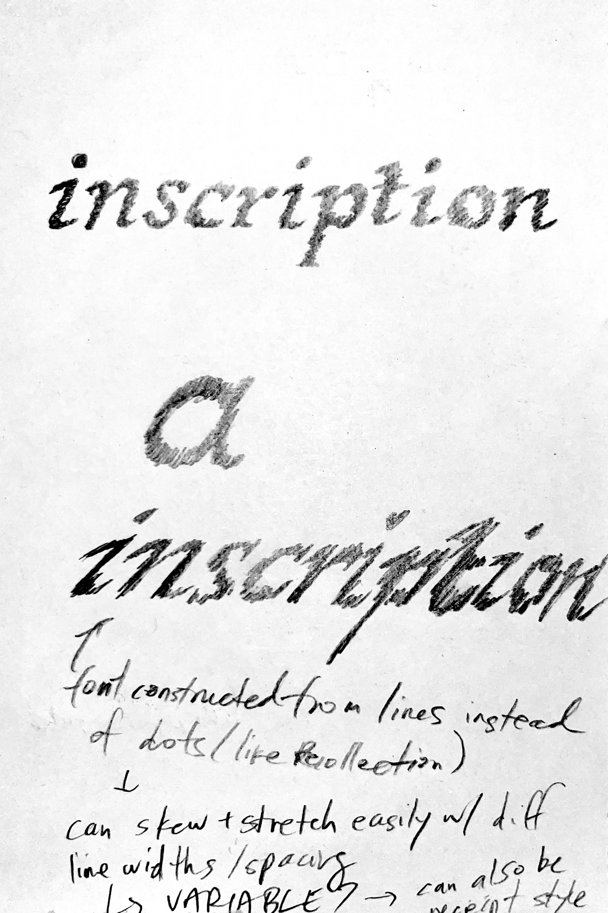
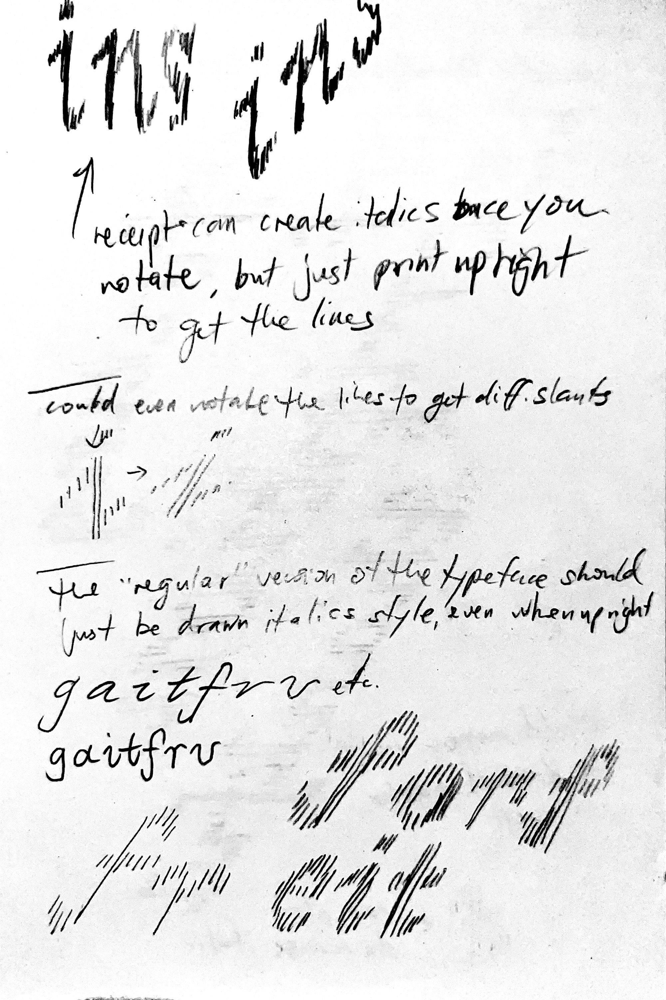

here are my thingz.
i make my thingz for fun.
i make my thingz to feel inspired.
i make my thingz to explore.
my thingz document my learning.
my thingz show my interests.
my thingz are in progress.
my thingz are not just references to other things.
i make thingz because i miss making thingz.
this site is one of my thingz too.
thx for taking a look around at my thingz.
—christine xia (project started in may 2026, ongoing)
thingz 1: this site
- an evolution of my interactive media: web class archive
need to fix how things are laggy whenever the recollection iframe gets resized—likely because of the transition-duration stuff that happens when you resize the actual site—THIS IS SO HARD. trying to detect when window is being resized to toggle class, but only finding ways to add/remove once after the first window resize or associating with specific window sizes FIXED IT! doing addClass for a class that sets the transition-duration to 0 on window resize wasn’t working at first since it completely removes the blur transition, but removing the class on click brings it back!
lower priority fix: the dashed border/outline on mobile. on desktop i’m using a 0.5px border to resolve the fact that using a 1px outline displays weirdly once i expand one of the columns (all the columns on the right no longer have visible outlines). however, on mobile the 0.5px border doesn’t render so i’ve opted to use a 1px outline for now. do i make the outline work better on desktop and mobile? if i do i’d have to stick with the longer line length of dashes instead of the current short length. i just used border-right and have no border on the last column (been tryna avoid needed to add “first”/“last” classes in html to things to format stuff but will accept it this time lol)
lower priority design update: toggle button text on click (swtich between + and - to reflect the collapsed/expanded state of the text below)
thingz 2: fontz
- making fonts à la rave in berlin 1100
-----
-----
dot matrix serif font where the size of the dots are bigger and smaller to create contrast (inkblot matrix). the idea came to me while i was half asleep in the middle of the night lol
- remove rows of empty dots and replace with a margin-top so that the empty spaces don't block .dot:hover for other letters
- maybe: make a reset button
- maybe: add a typing cursor, maybe allows you to put the cursor anywhere and backspace from that position? once i can place the cursor based on where you click then backspacing should be easy by using .previous(). cursor placement can probably have you click on a .letter and it places the cursor before()
- eventually make a non-typing specimen page? that could be the main page and this typing one is secondary. that way i can lead with a nicer-looking specimen page lol. can still be interactive! i'll need to think about how to build it to achieve different scales since zoom is so unreliable. could it be using iframes of html files that have a different rem font size? or could it just be selecting children() (the .dots) of each section and changing the size there somehow? idk
- maybe: activate with a gesture, can display on portable 3:4 tv screen i have to add more softness + texture? the smaller supporting type could be a pixel font that aligns with the resolution of the screen
- pretty sure: could also make a narrative type specimen (zine)? would be great to contrast the display size with tiny pencil handwriting/illustrations
- 100% (but down the line): make a proper font (as software, in glyphs) and have the light weight be sharp and “normal” and the bold weight soft/blurry/bleed-y
-----
italic font made of vertical lines:



-----
gridded font (like the early earlier cover sketch of type that was retro videogame-y, wherever that sketch went lol)
-----
also make a grotesque font à la grotesque from peignot’s type foundry before they lost ownership—something designed optically for print, having an awkwardness in digital. start with bold weight?
-----
is there a way to automatically update on the site if it’s something i’m designing in glyphs similar to working on a site? (maybe it’s just constantly exporting font files under the same name to the same github folder?)
thingz 3: platez
could be the most natural extension of the original publication, making multiple taxonomies for things, endlessly updating
layout could be a horizontal version of this site (rows instead of columns) and adjust the border styling to match the book with the single vertical rule for each grouping, hover to expand, can pair the special vanity plates with their hi-res recreations
layout fills the screen, the about/description can be a small draggable element that just starts in the centre of the screen. maybe also make it expandable/shrinkable on click?
the draggable element could also have the navigation/taxonomy on it, click on it to only show a single category of plates
have some simple animation to make the categories appear/disappear with some easing? still blunt and not too smooth, but something to make it a bit less rough/janky
how can i integrate more of the materials of the zine in here? is there a way to get the chunky feeling of the nuts and bolts binding? or is it simpler and it’s about just setting everything to multiply against a metallic background?
thingz 4: sifting
- mini site gesture(s), like my website is a sandcastle anticipating the rising tide
i collect, i sift
i hoard, i organize
i observe, i absorb, i reinterpret
i don’t mold a piece of clay, i carve from a chunk of stone (or build from a pile of pebbles)
AND/OR
could this also be an expanded series based on the OG sandcastle site? would redesign the sandcastle site (and hopefully fix the whole div disappearing when it goes fully blue lol)
my website is a sandcastle anticipating the rising tide. (og)
my website is candle’s flame flickering with every movement. (continuing on impermanence/precariousness? maybe just a weaker version of the og)
my website is a collection of me. (my knowledge over time? meh)
my website is real because of you. (pixels visible only because you’re here, otherwise just lines of code sitting on github pages)
thingz 5: portalz?
ascii… landscape? point and click?
could be cool to create complex landscapes for a point and click, and putting/hiding actual type in the landscapes as the clickable things
infinite (not actually) chain of iframes embedded in one another
(used to have an iframe of this site here to show the infinite loop but obviously making the site lag when resizing/hovering lol)
css hue shift on mouse move to shift the colour as you navigate?
- from the maker of the cookie clicker game, orteil: his “Nested” game also has this abstract, expanding looping experience that’s interesting
thingz 6: archive of feelings
finish workshop project!
should just make a dual site, similar to the original ideas sketch site for grave eternity with the digital and physical archive of each side
can still consider how to create a digital “cabinet” or shelf, at least for the physical side (digital side maybe can still remain more like a file system?)
thingz 7: i’ll be here until you wake up / i’ll be here until you fall asleep
constant web scrapers dumping information onto the page + background colour timing with day/night cycle of toronto (or wherever i am)
my mind is restless lol
maybe don’t need to pay for server and can do it through github?
- sleep time: scraping transit system websites for major cities (how i have had many dreams about getting lost in made up transit systems), being late, can’t find the right clothes
- dinner time: menus/websites of restaurants in my area?
- night time between dinner and bed: youtube thumbnails etc.
- could also include content from scrolling through steam/nintendo e-shop looking for games and sales
- maybe some times of day are more peaceful as well
somethingz: initial seeds and fleeting thoughts
thermal/receipt paper? marquis, scraper? burning “disregarded” info, records. could be made for mobile to have more vertical format.
^ can print my italic font made of vertical lines on receipt paper?
folding paper cranes out of gum wrappers/garbage? scans of garbage/receipts/etc. + interaction to fold
blue error screen ocean, moving, shifting, things floating
photobooth typography (like when people make hearts and stuff with the grid of 9 images, lol—would be so expensive to do it for real but that’s kinda the cool part?)
“i take pictures”—how i’m less of a photographer but collector of images, captured by myself or otherwise (visualizing how “take” can mean two things)
perfume samples and scratch n sniff things in magazines where kinda crazy, right? lol. blog post with very early perfume ad